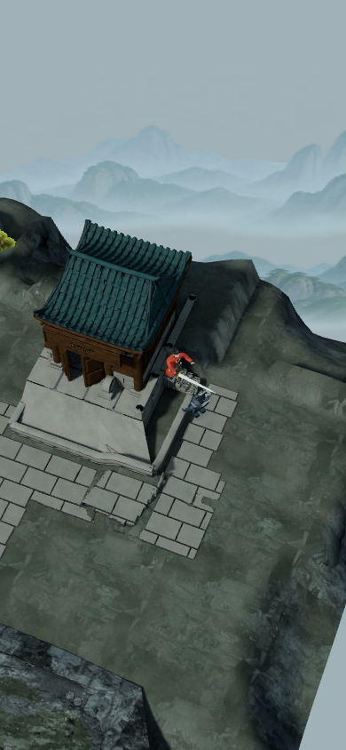
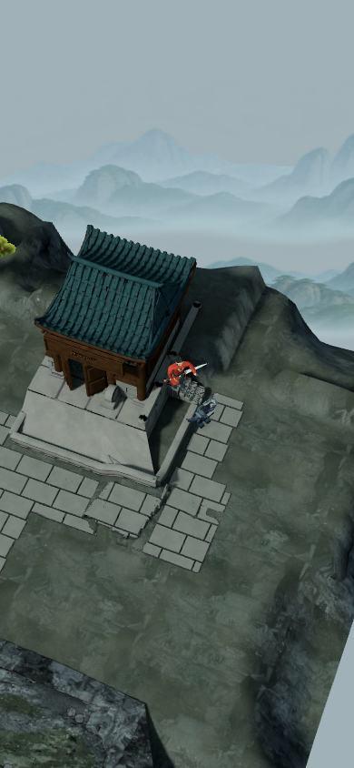
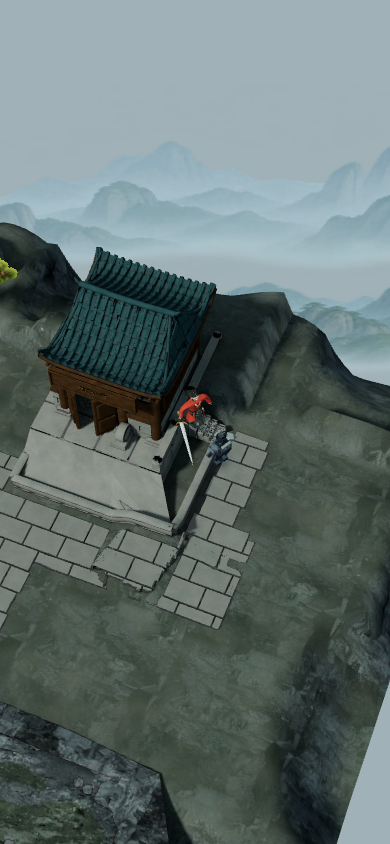
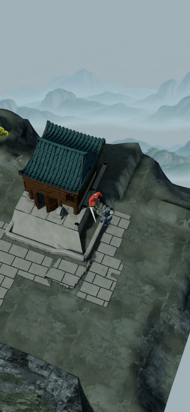

真实触屏出剑；未暂停或设置姿势。Canvas读回隐藏DOM血条；按原时间顺序。
1 windup / phase 0.19487179487179487
2 sweep / phase 0.38076923076923075
3 contact / phase 0.44

4 follow / phase 0.622051282051282

5 recover / phase 0.8515384615384614

6 rest / phase None
